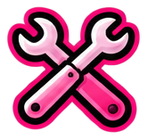

Handige uitleg voor verzamelaarsTips & tricks!
Pokémonkaarten verzamelen is leuk, maar er komt best veel bij kijken! Hier verzamel ik mijn uitleg, tips en handige adressen. 💗
Ontdek de onderwerpen
De gids groeit mee met mijn hobby!Onderwerpen laden...
Mis je een onderwerp?
Laat het me weten via Instagram! Ik schrijf graag over dingen waar je als Pokémonverzamelaar écht iets aan hebt.
Stuur me een bericht →